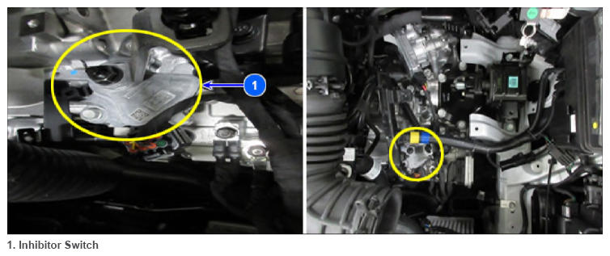

Inhibitor Switch
WARNING: This page is about a different variant/trim than selected.
 Courtesy of HYUNDAI MOTOR AMERICA
|
Shift lever positions are changed by driver need, lever position is sent to TCM to control gear position.
The inhibitor switch signal, which is delivered from TCM according to shift lever position (P, R, N, D), controls the gear setting.